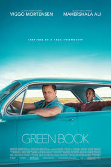

მთავარ გვერდზე დაბრუნება

ფილმის სახელი: მწვანე წიგნი
ფილმის შეფასება: 8.2 / 10
ფილმის მოკლე აღწერა: მუშათა კლასის იტალიელ-ამერიკელი ბაუნსერი აფროამერიკელი კლასიკური მუსიკის პიანისტის მძღოლი ხდება 1960-იანი წლების ამერიკის სამხრეთის სხვადასხვა დარბაზში მოგზაურობისას.